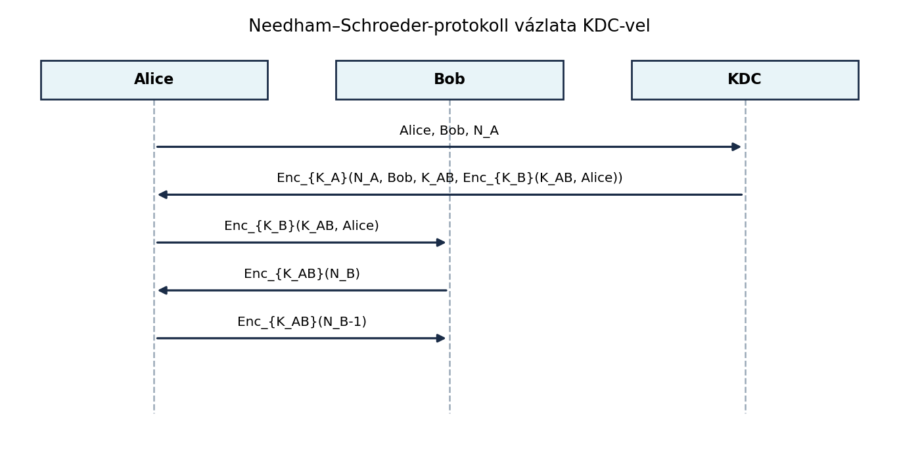

Képzeljünk el egy csevegőalkalmazást, amelyet tíz barát használ. Mindenki azt szeretné, ha a kettejük közötti üzeneteket más ne olvashassa. Az első ötlet az lehetne, hogy generálunk egyetlen titkos kulcsot, és mindenki ugyanazt használja a titkosításhoz. Ez azonnal katasztrofális: ha mindenkinél ugyanaz a kulcs van, akkor bármelyik résztvevő el tudja olvasni bármely másik résztvevő üzenetét – vagyis a „titkosság” megszűnik. Ha a csoportba bekerül egy rosszindulatú tag, vagy ha egyetlen eszköz kompromittálódik, az egész hálózat kommunikációja kiszivárog.
A második ötlet az, hogy minden pár külön kulcsot kap. Alice és Bob kap egy kulcsot, Alice és Charlie egy kulcsot, Bob és Charlie egy kulcsot, és így tovább. Ez már biztonságosabb, de felveti a kulcselosztás problémáját: hogyan juttatjuk el ezeket a titkos kulcsokat a felekhez, ha még soha nem találkoztak biztonságos csatornán? Ha személyesen kell találkozni vagy megbízható futárt küldeni, az résztvevő esetén hamar kezelhetetlenné válik. A szimmetrikus kriptográfia ezen korlátja motiválta a nyilvános kulcsú kriptográfia megszületését.
Tekintsünk résztvevőt. Minden résztvevőt egy pont jelöl, és két pont között akkor húzunk élt, ha a két fél közös titkos kulcsot birtokol. A cél az, hogy a gráf teljes legyen: mindenki mindenkivel biztonságosan tudjon kommunikálni. Az élek száma éppen a szükséges kulcsok száma. Az alábbi ábra a KDC működését mutatja, amely csökkenti a feleknél tárolandó kulcsok számát, de központi bizalmat igényel.

Az ábrán Alice kezdeményez: elküldi a KDC-nek a saját és Bob nevét, valamint egy friss nonce-ot. A KDC generál egy munkamenetkulcsot, és elküldi Alice-nek Alice hosszú távú kulcsával titkosítva. Az üzenet tartalmazza Bobnak szánt, -vel titkosított részt is, amelyet Alice továbbít Bobnak. Bob ezután egy nonce-ot küld, Alice pedig -gyel válaszol, bizonyítva, hogy ismeri -t. A protokoll pontos biztonsági elemzése később, a Kerberos, OAuth és JWT kriptográfiai buktatói alfejezetben kerül elő; itt csak a KDC alapötletét szemlélteti.
Definíció. Kulcselosztási probléma (key distribution problem). Szimmetrikus kriptográfiában ahhoz, hogy két fél biztonságosan kommunikáljon, előzetesen meg kell osztaniuk egy közös titkos kulcsot. A probléma az, hogy ezt a kulcsot hogyan juttatjuk el hozzájuk anélkül, hogy egy illetéktelen támadó megismerné, különösen akkor, ha a felek távol vannak egymástól, és nincs közöttük már meglévő biztonságos csatorna.
Definíció. Kulcselosztó központ (KDC, Key Distribution Center). Egy megbízott szerver, amely minden résztvevővel rendelkezik egy-egy hosszú távú titkos kulccsal (például Alice-szel, Bobbal). Amikor két fél kommunikálni szeretne, a KDC generál egy rövid életű munkamenetkulcsot , és ezt a megfelelő hosszú távú kulcsokkal titkosítva juttatja el mindkettőjüknek. A KDC tehát központi bizalmat igényel.
Definíció. Merkle-rejtvény protokoll. Két fél, Alice és Bob, akik nem osztanak meg előzetes titkot, nyilvános csatornán keresztül szeretnének közös kulcsot létrehozni. Alice generál rejtvényt, ahol minden rejtvény egyedi azonosítót és egy kulcsot rejt. Bob véletlenszerűen kiválaszt egy rejtvényt, megoldja, és visszaküldi a benne talált azonosítót. Alice tudja, hogy a visszaküldött azonosító melyik kulcshoz tartozik, így lesz a közös kulcs. Egy passzív támadó, aki az összes üzenetet elfogja, nem tudja, melyik rejtvényt oldotta meg Bob, ezért mindegyiket meg kell oldania, hogy a kulcsot megszerezze.
Ha résztvevő minden párja külön kulcsot kap, akkor a szükséges kulcsok száma éppen a résztvevők közötti párok száma.
Tétel. résztvevő esetén a páronkénti titkos kulcsok száma
Bizonyítás. Minden résztvevő másik résztvevővel oszt meg kulcsot. Ez összesen (irányított) kulcskapcsolatot ad, de ebben minden kulcsot kétszer számoltunk: az – kulcsot egyszer oldaláról, egyszer oldaláról. Ezért a tényleges kulcsok száma . ∎
Kidolgozott példa.
-
esetén a kulcsok száma
.
-
esetén
.
-
esetén
.
-
esetén
.
Látható, hogy a kulcsok száma négyzetesen növekszik a résztvevők számával. Egy nagyvállalatnál vagy egy internetes szolgáltatásnál ez teljesen kivitelezhetetlen, ráadásul minden kulcsot biztonságosan el is kell juttatni a felekhez.
A KDC ezt a problémát úgy csökkenti, hogy minden résztvevőnek csak egy hosszú távú kulcsot kell tárolnia (a KDC-vel megosztottat), a páronkénti kulcsokat pedig igény szerint generálja. Ez azonban központi támadási pontot jelent: ha a KDC kompromittálódik, az összes kommunikáció kiszivárog.
Továbbvitt eredmény. A KDC-t és a belőle kinövő hitelesítési protokollokat a Kerberos, OAuth és JWT kriptográfiai buktatói alfejezetben elemezzük részletesen.
Ralph Merkle 1974-ben (publikációja később vált ismertté) olyan kulcscsere-ötletet javasolt, amely nem igényel előzetes közös titkot és nem igényel központi szervert. A protokoll azon alapul, hogy a támadó munkája jóval nagyobb, mint a tisztességes feleké.
Az alábbi ábra a protokoll üzenetváltását és a felek, illetve a támadó munkaigényét mutatja egymás mellett.
Algoritmus (Merkle-rejtvények).
Paraméterek:
(rejtvények száma),
(egy rejtvény megoldásának várható műveletigénye).
Kidolgozott példa. Legyen , a rejtvények azonosítói és kulcsai:
| Rejtvény | Azonosító | Rejtett kulcs |
|---|---|---|
| 1 | 0x01 |
|
| 2 | 0x02 |
|
| 3 | 0x03 |
|
| 4 | 0x04 |
Bob véletlenszerűen a 3. rejtvényt oldja meg. Megkapja
0x03-at és
-at,
majd visszaküldi 0x03-at Alice-nek. Alice tudja, hogy a 3.
rejtvényhez
tartozik, így mindketten
-at
használják. A passzív támadó Mallory látja az összes rejtvényt és a
visszaküldött 0x03 azonosítót, de nem tudja, hogy ez melyik
rejtvényben volt elrejtve, mert az azonosító csak a rejtvény megoldása
után derül ki. Mallorynak mindegyik rejtvényt meg kell oldania, hogy
megtalálja
-at.
Támadás (passzív lehallgatás).
Mallory elfogja az összes
rejtvényt és a Bob által visszaküldött
azonosítót. Mivel nem tudja, melyik rejtvény tartalmazta
-t,
szekvenciálisan oldja meg a rejtvényeket, amíg az
-ediket
meg nem találja. Bob választása egyenletes, ezért a várhatóan megoldandó
rejtvények száma
.
Ha egy rejtvény megoldása
művelet, Mallory várható munkája
Alice munkája rejtvény elkészítése, amelyet konstans idővel feltételezünk, tehát . Bob munkája egyetlen rejtvény megoldása, tehát . Ha és értékét egyensúlyba hozzuk (), akkor:
A támadó munkája tehát a legitim felek munkájához képest négyzetesen nagyobb. Ezt nevezzük négyzetes résnek. Vegyük észre, hogy ez a rés csak akkor érhető el, ha és egyensúlyban van; ha , akkor a támadó előnye csökken, ha , akkor a felek munkája nő.
Megjegyzés. A négyzetes rés látványos, de a gyakorlatban nem elég erős. Például ha , akkor Alice és Bob együttes munkája körülbelül művelet, Mallorynak viszont körülbelül műveletre van szüksége. Ez első pillantásra nagy különbség, de művelet egy modern támadó számára nem jelent komoly akadályt. A Diffie–Hellman-kulcscsere ennél sokkal erősebb rést ad: a legitim felek munkája polinomiális, a legjobb ismert támadásoké viszont szubexponenciális vagy exponenciális. Ezt a különbséget a következő, A Diffie–Hellman-kulcscsere alfejezetben bontjuk ki.
Továbbvitt eredmény. A Merkle-rejtvények négyzetes rését mint motivációt használjuk az A Diffie–Hellman-kulcscsere alfejezetben: a DH-kulcscsere éppen azt a rést ugrotta meg, amelyet a Merkle-rejtvények nem tudtak átlépni.
A Merkle-rejtvények rámutattak egy fontos irányra: lehetséges úgy közös kulcsot létrehozni, hogy a feleknek nincs előzetes titkuk. Az igazi áttörést azonban a nyilvános kulcsú kriptográfia hozta el.
Whitfield Diffie és Martin Hellman 1976-ban publikálta a New Directions in Cryptography című cikket, amelyben bevezették a nyilvános kulcsú kriptográfia alapelveit és a Diffie–Hellman-kulcscserét. Az alapötlet az, hogy minden félnek két kulcsa van: egy nyilvános kulcsa (), amelyet bárki megismerhet, és egy titkos kulcsa (), amelyet csak ő ismer. A titkos kulcs soha nem hagyja el a tulajdonost, így nincs szükség központi kulcselosztóra. Az aszimmetrikus kulcspár révén a felek úgy tudnak közös titkot létrehozni, hogy a titkos kulcsaikat nem küldik el egymásnak.
Rivest, Shamir és Adleman 1977-ben publikálta az RSA-t, amely az első gyakorlatban is használható nyilvános kulcsú titkosítási és aláírási séma lett. Az RSA a nagy összetett számok faktorizációjának nehézségére épül.
Érdekes történeti adalék, hogy a brit GCHQ (Government Communications Headquarters) kutatói – James Ellis, Clifford Cocks és Malcolm Williamson – már az 1970-es évek elején felfedezték a nyilvános kulcsú titkosítás és a Diffie–Hellman-szerű kulcscsere alapelveit. Munkájuk azonban titkos maradt, és csak az 1990-es évek végén hozták nyilvánosságra. (Ellenőrzési igény: a pontos dátumok és a nyilvánosságra hozatal körülményei forrásellenőrzést igényelnek.) Ez a történet is mutatja, hogy a kriptográfiában a jó ötletek gyakran több helyen, egymástól függetlenül születnek meg.
A KDC legismertebb valós megvalósítása a Kerberos hálózati hitelesítő protokoll, amelyet az MIT fejlesztett ki, és ma is széles körben használnak vállalati környezetekben (például Microsoft Active Directory). A Kerberos-ban a KDC két szolgáltatást nyújt: egy jegyosztó szervert (Ticket Granting Server, TGS) és egy hitelesítő szervert (Authentication Server, AS). A felhasználó jelszóból származtatott hosszú távú kulccsal hitelesíti magát a KDC-nél, és kap egy jegyet (ticket), amely munkamenetkulcsot tartalmaz egy adott szolgáltatáshoz. A jegy a szolgáltatás hosszú távú kulcsával van titkosítva, így a felhasználó nem tudja módosítani, csak továbbítani.
A Kerberos előnye, hogy a felhasználónak nem kell minden szolgáltatáshoz külön jelszót vagy kulcsot kezelnie, elég egyszer bejelentkeznie a KDC-nél. A hátránya a KDC-vel kapcsolatos közös probléma: ha a KDC leáll vagy kompromittálódik, az egész hálózat hitelesítése összeomlik. A Kerberos részletes elemzésére a Kerberos, OAuth és JWT kriptográfiai buktatói alfejezetben térünk vissza.
„Egyetlen közös kulcs mindenkinek elég.” Ez a leggyakoribb tévhit. Ha minden résztvevő ugyanazt a kulcsot használja, bármelyikük elolvashatja a többiek üzenetét, és egyetlen kompromittálódás az egész hálózatot felfedheti. A helyes gyakorlat a páronkénti kulcsok vagy egy KDC használata.
A KDC mint varázsszer. A KDC központi bizalmat igényel, és ha kompromittálódik, a támadó az összes munkamenetkulcsot megszerzi. Ráadásul a KDC egyetlen meghibásodási pont (single point of failure). A gyakorlatban a KDC-t erős fizikai és logikai védelemmel, valamint redundanciával kell kialakítani.
A Merkle-rejtvények modern használata. A Merkle-rejtvények négyzetes rése nem elegendő a mai biztonsági követelményekhez. Bár tanulságos konstrukció, éles rendszerben soha nem szabad használni. A modern kulcscserék (Diffie–Hellman, elliptikus görbés ECDH) exponenciális vagy szubexponenciális biztonsági rést adnak.
A hosszú távú kulcsok frissítésének elhanyagolása. A KDC-nél tárolt hosszú távú kulcsokat rendszeresen cserélni kell, mert minél tovább vannak használatban, annál nagyobb az esélyük a kompromittálódásra. A kulcsrotáció és a lejárati idő beállítása alapvető gyakorlat.
1. feladat (A)
Számítsd ki a páronkénti kulcsok számát
,
és
résztvevő esetén.
2. feladat (A)
Definiáld a kulcselosztó központot (KDC), és sorolj fel legalább két
előnyét és két hátrányát.
3. feladat (B)
Tekintsd a Needham–Schroeder-protokoll egyszerűsített változatát,
amelyben a KDC nem használ nonce-ot: Alice kérése csak a neveket
tartalmazza, a válasz pedig
.
Milyen támadást tud végrehajtani egy aktív támadó, aki rögzíti a korábbi
üzeneteket? Hogyan véd a nonce, és mit nem véd meg?
4. feladat (B)
Merkle-rejtvények: legyen
rejtvény, és minden rejtvény megoldása
műveletet igényel. Becsüld meg Alice, Bob és a passzív támadó várható
munkáját
hatványaként kifejezve! Feltételezzük, hogy Alice munkája rejtvényenként
konstans.
5. feladat (C)
Bizonyítsd be, hogy
résztvevő esetén a páronkénti kulcsok száma
.
6. feladat (D)
Tervezz egy oktatási játék Merkle-rejtvény protokollt Pythonban!
Használj
rejtvényt, ahol minden rejtvény egy 16 bites kulcsot rejt el úgy, hogy a
rejtvény megoldása egy 16 bites érték brute-force-keresése. Az oktatási
implementáció legyen szándékosan egyszerű,
# OKTATÁSI CÉLRA – NEM ÉLES HASZNÁLATRA megjegyzéssel. A
kód mutassa be, hogy Alice és Bob megegyeznek egy kulcsban, és becsüld
meg a támadó munkáját.
:
.
:
.
:
.
KDC definíciója: lásd a Definíciók szakaszban.
Előnyök: (1) minden félnek csak egy hosszú távú kulcsot kell tárolnia;
(2) a munkamenetkulcsok igény szerint generálhatók és cserélhetők.
Hátrányok: (1) a KDC központi bizalmat igényel, és kompromittálódása
katasztrofális; (2) a KDC egyetlen meghibásodási pont.
Nonce nélkül a támadó egy régi KDC-választ Alice-nek visszajátszva régi (esetleg kompromittált) kulcs használatára veheti rá. Az ezt kizárja Alice oldalán, mert a válasznak az aktuális -t kell tartalmaznia. Bob oldalán azonban a nonce-os változat sem véd: a jegyben nincs frissességi információ, így egy kompromittált régi birtokában a támadó a régi jegyet visszajátszva Bob felé Alice-nek adhatja ki magát (Denning–Sacco-támadás). A javítás időbélyeg vagy Bob saját nonce-ának beépítése a jegybe (ezt a Kerberos teszi).
Alice munkája:
művelet (a rejtvények generálása konstans).
Bob munkája:
művelet.
Támadó várható munkája:
művelet.
Vegyük észre, hogy itt
,
ezért a támadó előnye messze nem éri el a négyzetes rést; a rést akkor
maximalizáljuk, ha
.
A bizonyítás a tételben szerepel: minden résztvevő másikkal oszt meg kulcsot, ez kulcskapcsolat, de minden kulcs kétszer szerepel, ezért osztunk 2-vel.
# OKTATÁSI CÉLRA – NEM ÉLES HASZNÁLATRA
import hashlib
import secrets
N = 8 # rejtvények száma
PREFIX = b"PUZZLE" # ebből ismeri fel Bob a helyes megoldást
def maszk(g, hossz):
"""A rejtvény XOR-maszkja a 16 bites g titokból."""
return hashlib.sha256(g.to_bytes(2, "big")).digest()[:hossz]
def xor(a, b):
return bytes(x ^ y for x, y in zip(a, b))
# Alice: N rejtvény, egyedi 2 bájtos azonosítókkal és 2 bájtos kulcsokkal
tabla = {} # azonosító -> kulcs (csak Alice ismeri)
rejtvenyek = []
while len(rejtvenyek) < N:
r_id = secrets.token_bytes(2)
if r_id in tabla:
continue
kulcs = secrets.token_bytes(2)
g = secrets.randbelow(2**16)
szoveg = PREFIX + r_id + kulcs
rejtvenyek.append(xor(szoveg, maszk(g, len(szoveg))))
tabla[r_id] = kulcs
def megold(rejtveny):
"""Brute force: legfeljebb 2^16 hash-kiértékelés."""
for g in range(2**16):
szoveg = xor(rejtveny, maszk(g, len(rejtveny)))
if szoveg.startswith(PREFIX):
return szoveg[len(PREFIX):len(PREFIX) + 2], szoveg[len(PREFIX) + 2:]
return None
# Bob: véletlen rejtvényt választ, megoldja, az azonosítót visszaküldi
r_id, bob_kulcs = megold(rejtvenyek[secrets.randbelow(N)])
alice_kulcs = tabla[r_id]
print("Közös kulcs megegyezik:", alice_kulcs == bob_kulcs)
print("Támadó várható munkája (hash-kiértékelés):", int((N + 1) / 2 * 2**16))A rejtvény a PUZZLE || R_i || K_i szöveg XOR-ja egy 16
bites
titokból SHA-256-tal képzett maszkkal; Bob a PUZZLE
előtagról ismeri fel a helyes
-t
(legfeljebb
próbálkozás). A támadónak ugyanígy minden rejtvényt brute force-szal
kell megfejtenie, mert az
azonosító a rejtvényből a maszk ismerete nélkül nem olvasható ki.
Kimenet (háromszor futtatva, CPython 3; a kulcsok véletlenek, a kiírt két sor minden futásnál ugyanaz):
Közös kulcs megegyezik: True
Támadó várható munkája (hash-kiértékelés): 294912A támadó várhatóan rejtvényt old meg, ez hash-kiértékelés. Alice munkája rejtvény elkészítése, Bob munkája legfeljebb hash-kiértékelés (átlagosan ).
A szimmetrikus kriptográfia alapvető korlátja a kulcselosztási probléma: két félnek előzetesen meg kell osztania egy titkos kulcsot. résztvevő páronkénti kommunikációjához kulcs kell, ami négyzetesen növekszik. A kulcselosztó központ (KDC) ezt úgy csökkenti, hogy minden fél egy hosszú távú kulcsot oszt meg a KDC-vel, amely rövid életű munkamenetkulcsokat generál és juttat el. A KDC központi bizalmat igényel, és kompromittálódása katasztrofális; ezt a Kerberos, OAuth és JWT kriptográfiai buktatói alfejezet elemzi részletesen.
A Merkle-rejtvények protokollja megmutatja, hogy lehetséges közös kulcsot létrehozni előzetes titok nélkül, de csak négyzetes rést ad: ha Alice rejtvényt generál, Bob egyet old meg, a passzív támadó várhatóan munkát végez, ahol egy rejtvény megoldási költsége. Ha , a támadó munkája , míg a feleké . Ez a rés motiválja a Diffie–Hellman-kulcscserét, amelyet az A Diffie–Hellman-kulcscsere alfejezet tárgyal, és amely ennél sokkal erősebb biztonságot ad.